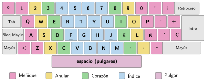

La fila guía
Criterios: 1c, 1f
🤔 Pienso10 min
Qué hago aquí: Piensa un momento y contesta con lo que ya sabes. No pasa nada si no lo sabes: es para empezar.
Cierra los ojos y pon los dedos en el teclado. ¿Sabes dónde están las letras sin mirar? Escribe tu nombre y comprueba.
📖 Leo y aprendo20 min
Qué hago aquí: Lee despacio, mira los dibujos y los ejemplos, y quédate con la idea clave del final.
Escribir al tacto es escribir con los diez dedos sin mirar el teclado. Cada dedo pulsa siempre las mismas teclas y vuelve a su sitio. Al principio va despacio, pero en pocas semanas escribirás más rápido que mirando.

El espacio se pulsa con el pulgar (normalmente el de la mano contraria a la última letra). El Intro lo pulsa el meñique derecho.
✏️ Hago180 min
Qué hago aquí: Haz las actividades en orden. Empieza siempre por las básicas.
Copia cada línea tres veces sin mirar el teclado.
| asdf ñlkj asdf ñlkj fdsa jklñ fdsa jklñ |
| aa ss dd ff jj kk ll ññ fj dk sl añ |
| fa la da sa ja ka ña fá lá dá sá |
| sala lada fada asas jaja kala ñala |
| la sala; las alas; la falda; las hadas |
Haz las lecciones de la fila guía del programa de mecanografía hasta llegar a 30 ppm sin mirar.
Añade la G y la H (índices, un paso hacia el centro). Copia sin mirar: gas haga gala hada jaga lago faja daga saga.
Escribe todas las palabras que se te ocurran solo con las letras de la fila guía (A S D F G H J K L Ñ). ¿Cuántas encuentras?
🚀 Amplío (si quieres saber más)
Qué hago aquí: ¿Has terminado? Lee la curiosidad o elige el reto. Es voluntario.
Escribe una frase con sentido usando solo letras de la fila guía, la G, la H y el espacio.
✅ Compruebo10 min
Qué hago aquí: Contesta sin mirar la ficha y marca cómo lo llevas.